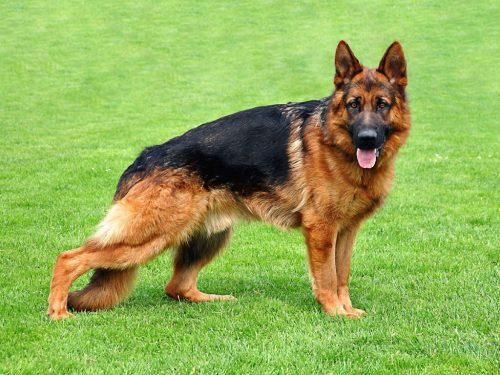

Pastor Alemão
Alem de ser o melhor amigo do homem, o Pastor Alemão é umas das 3 raças de cachorro mais inteligentes
- Nome Científico: Canis lupus familiaris
- Tamanho médio: Macho: 60–65 cm, Fêmea: 55–60 cm
- Tempo de vida médio: 11 anos
- Habitat: Terrestre
Pastor-alemão ou cão-lobo-da-alsácia é uma raça canina proveniente da Alemanha. Em sua origem era utilizado como cão de pastoreio de rebanhos. Atualmente é mais utilizado como cão de guarda e cão policial.